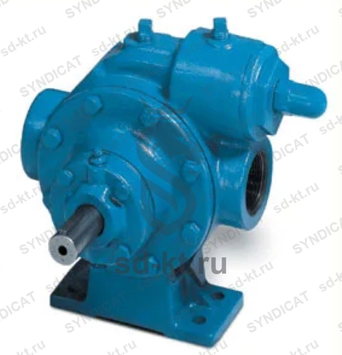

LGL 1,5 Насос BLACKMER 900 л/мин для перекачки СУГ (без рамы , двигателя) (США)
Артикул: 0049
Blackmer: Лидер в оборудовании для сжиженного газа
Раздел: Насосы и агрегаты LPG · АГЗС
Цена и наличие — по запросу. Поставляем оригинал и аналоги. Доставка по России.
Модификации и размеры (2)
- LGL 1,5 Насос BLACKMER 900 л/мин для перекачки СУГ (без рамы , двигателя) (США) · арт. 0049
- LGL 1,25 Насос BLACKMER 50 л/мин для перекачки СУГ (без рамы , двигателя) (США) · арт. 0086
Подберём нужный вариант — уточните при запросе.
Описание
LGL 1,5 Насос BLACKMER 900 л/мин для перекачки СУГ (без рамы , двигателя) (США) производства Blackmer: Лидер в оборудовании для сжиженного газа — позиция из раздела «Насосы и агрегаты LPG» для АГЗС. Компания SYNDICAT поставляет оборудование и комплектующие для автозаправочных и газозаправочных станций по всей России. Цена и наличие «LGL 1,5 Насос BLACKMER 900 л/мин для перекачки СУГ (без рамы , двигателя) (США)» — по запросу: оставьте заявку или позвоните, подберём оригинал или аналог и рассчитаем доставку.